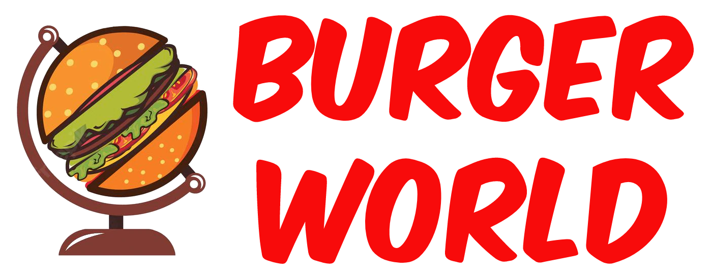
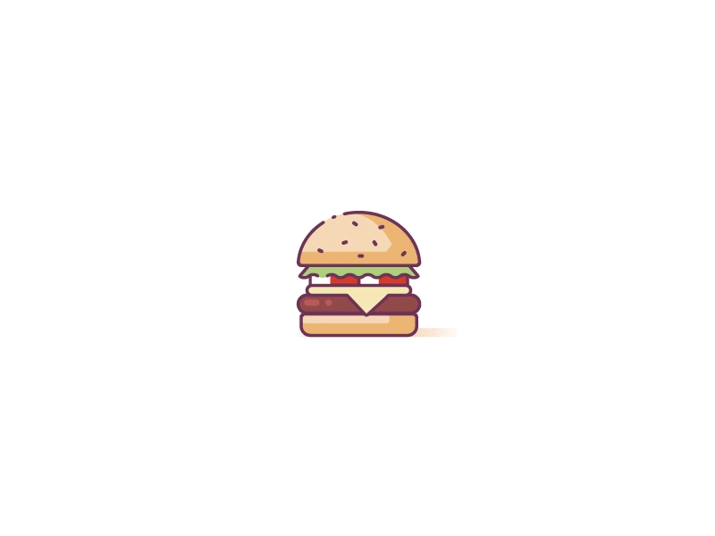
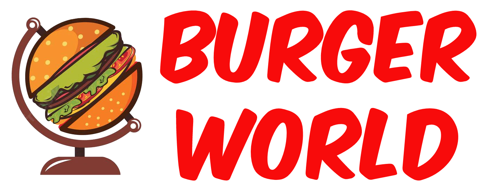
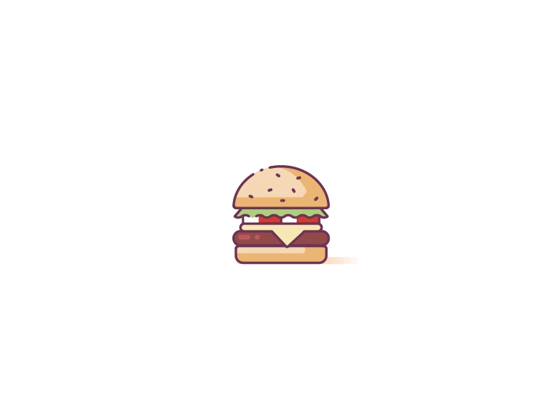
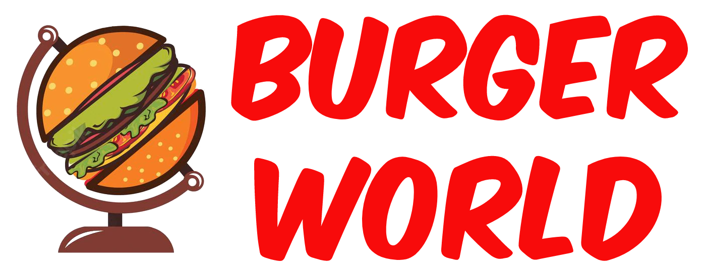
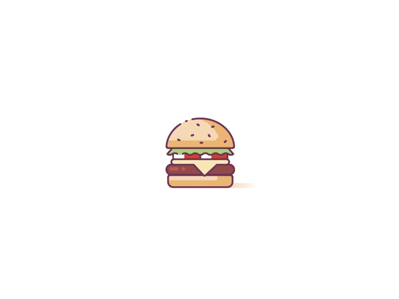

. Recipe .
VEG CHEESE BURGER
Step 1
Put a pan and heat oil in it. Add the chopped onions, carrots, capsicum and saute these ingredients. Add tomato ketchup and give it a nice stir.
Step 2
Add mashed potatoes in this mixture and sprinkle salt & pepper. Mix all the ingredients and shape them into patties. Meanwhile, add butter in a non-stick pan and heat it. Fry the prepared patties.
Step 3
Add a cheese slice on top of the patties. Cover with a lid and cook until the cheese starts to melt. Spread butter on one half of the burger buns.
Step 4
Add some cabbage on it, and top it up with tomato slices, cucumber and onion slice. Place the cooked burger patty with the cheese on top. Top up with some sauce of your choice.

 


